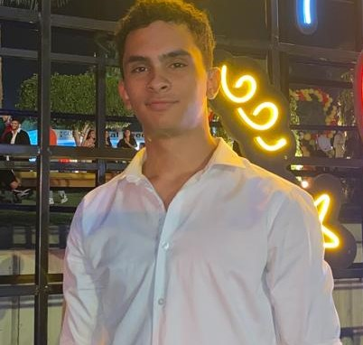

Ahmed Ehab
CS Senior student @AAST
Summary
I am a motivated and detail-oriented computer science senior student
pursuing my Bachelor's degree at AAST . I have a strong foundation in
programming languages, algorithms and data structures and I am always trying
to enhance my knowledge!
Education
-
Bachelor of Computer Science, Arab academy for science and technology
(2021-Present)
Work Experience
Skills
- Front End: HTML/CSS/JS
- Back End: C++/JAVA/SQL/R/PHP/C
- Java Technologies: JSP/JDBC/SERVLETS
- Data Analytics: R/Pyhton
-
Software Engineering Skills: Problem Solving, Object Oriented Programming,
Data Structures, Building ERPS
Languages
Contact Me


My Hobbies